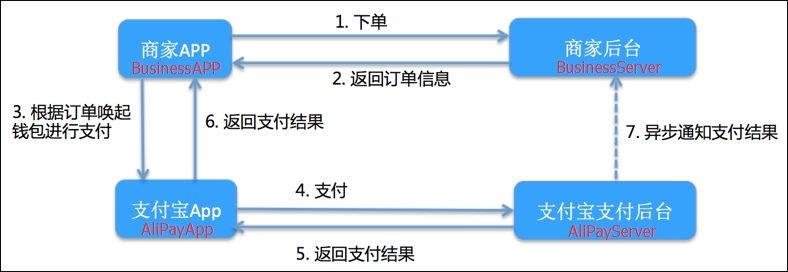

What is Alipay?Alipay is a Chinese mobile payment platform. It was created by Alibaba Group (e-commerce company) and currently has more than 500 million active users and a daily rate of more than 175 million payment transactions. It is widely used in China for any business and, as a result, integration with Alipay is a common requirement for mobile applications. For that purpose, the platform offers a complete integration API. ArchitectureA basic architecture schema of Alipay integration is described in the following picture:  Details:
Integration with GeneXusFrom Upgrade 8 of GeneXus 15, payment functions with Alipay can be integrated into the generated Android and iOS applications using an Extension Library included in the GeneXus installation and importing the Payment API. Step-by-step instructions1 - Register the application in the Alipay developer siteDevelopers need to be registered in the Alipay developer site and need to register all the applications that will integrate the payment functions. In this process, developers get the application credentials and signing information that is required to integrate with Alipay. Check this document for detailed information about the registration process. 2 - Create a PFX fileAlipay requires signing the payment information in each transaction with the credentials obtained when the application was registered in the Alipay developer site. For every application, Alipay creates public and private keys in plain text. In order to use those credentials in the integration with GeneXus using the Cryptography data types, we need to create a PFX file (Personal Information Exchange). This can be done executing a set of OpenSSL commands. Here is a detailed list of those commands and a utility file that can be downloaded to simplify this process. This is a one-time process; once we have the PFX file for an application, we do not need to generate it again in future builds. 3 - Set configuration informationThe first "programming" step is to set the configuration information. By default, the Alipay API loads the configuration information from an XML file named Alipay_Config, using the procedure LoadConfig. Just modifying this file is enough to set all the configurations needed to integrate the application with Alipay. Following is a description of the Alipay_Config.xml file structure.
<Configuration>
<AppId />
<Environment />
<CertificateFilename />
<CertificatePassword />
<CallbackURL />
<Timeout />
<AdditionalConfig />
</Configuration>
4 - Prepare payment dataThe next step is to prepare the payment data to send it to Alipay. First, the user needs to set some values in a variable based on PaymentApplicationData SDT from the Alipay API (product code, subject, body and amount). This variable will be the input of the procedure GetPaymentInformation which returns the processed information ready to be sent to Alipay. There is an intermediate step performed by the GetPaymentInformation procedure; it allows processing the ready-to-send payment information (which includes the generated order number) by the user, for example, to store it in the application database tables. These actions can be edited in the procedure OnAboutToPay from the Alipay API. 5 - Send payment information to AlipayNow the user is ready to send the payment information to Alipay, using the Pay method from the External Object AlipayProvider included in the Alipay API. This method receives the processed payment information returned by the procedure GetPaymentInformation in the previous step in a variable based on the PaymentInformation SDT. The following is an example code in a GeneXus Smart Devices object event with the actions from steps 4 and 5:
Event 'Pay with Alipay'
Composite
&PaymentApplicationData.ProductCode = 'Product name'
&PaymentApplicationData.TotalAmount = 1000
&PaymentApplicationData.Subject = 'Subject'
&PaymentApplicationData.Body = 'Purchase information'
GeneXus.Common.UI.Progress.ShowWithTitleAndDescription("Please Wait...","Preparing payment information...")
Alipay.GetPaymentInformation(&PaymentApplicationData, &PaymentInformation)
GeneXus.Common.UI.Progress.Hide()
if &PaymentInformation.ErrorCode > 0
Msg("Error: " + &PaymentInformation.ErrorDescription)
else
AlipayProvider.Pay(&PaymentInformation)
endif
EndComposite
Endevent
6 - Process payment resultThe user needs to code two actions to process an Alipay payment result. The first one is the AlipayProvider External Object event called OnPaymentFinished. This event receives a variable based on the PaymentResult SDT which contains an ErrorCode, ErrorDescription, and OrderNumber of the completed payment. Check detailed information about the Alipay API here. The following is an example code of this event:
Event AlipayProvider.OnPaymentFinished(&PaymentResult)
Composite
if &PaymentResult.ErrorCode = 0
GeneXus.Common.UI.Progress.ShowWithTitleAndDescription("Please Wait...","Finishing transaction...")
SetSaleStatus(&PaymentResult.OrderNumber, PaymentStatus.Paid)
ClearCart()
GeneXus.Common.UI.Progress.Hide()
ConfirmationPanel()
else
SetSaleStatus.Call(&PaymentResult.OrderNumber, PaymentStatus.Error)
Msg(&PaymentResult.ErrorDescription)
endif
EndComposite
EndEvent
7 - Asynchronous payment notification serviceThe last step is executed by Alipay servers, which call a payment notification service provided by the application developer. This service URL is what we indicate in the configuration using the CallbackURL parameter. By default this URL refers to a procedure named CallbackService included in the Alipay API. This procedure receives the HTTP data and converts it to an SDT structure (PaymentNotificationInfo); next, it calls another procedure named CallbackHandler to process that SDT with the notification information. In sumHaving registered the application and created the PFX file, the GeneXus developer only needs to modify the following objects to integrate Alipay into his application:
SampleA complete sample can be downloaded from here.
|